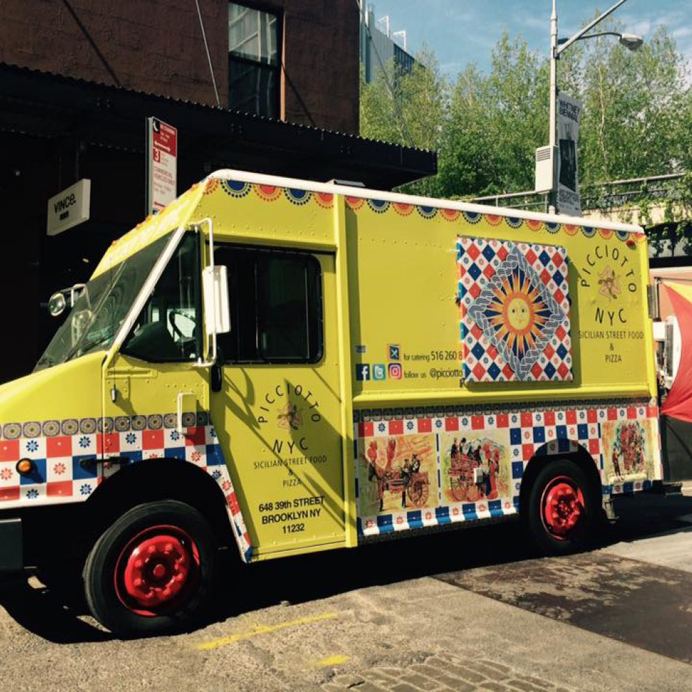

ATTENTION! Cucina Siciliana will be closed for an upcoming holiday. We'll see you back in January!
Retreived from roaminghunger.com
Cucina Siciliana offers gourmet Sicilian cuisine such as Gnocchi and Arancini, at reasonable prices. Two years ago, in 2017 we decided that we wanted to share the love of our heritage through food by using fresh ingredients and quality products. Even though we wanted to share that love we also wanted to share one of our cultures ways of selling food, Carretti Siciliano (Sicilian cart). The birth of a modern day Carretti Siciliano was born with Cucina Siciliana.
Our food truck not only offers exceptional food but culture and history as well. The history of the Carretti Siciliano is documented on the side of the truck. All food is prepared with the original recipes that our family has brought with them when immigrating to America in modern day equipment. We offer authentic drinks you won't find most places such as our Limonata di Sicilia. We offer a true Sicilian ambiance as well with Italian music, wine bottle candles and vintage style seating. Our ambiance may bring you in, but our food will keep you here.
Special events catering available for:
- Family Reunions
- Weddings
- Comming of Age Parties
- Anniversaries